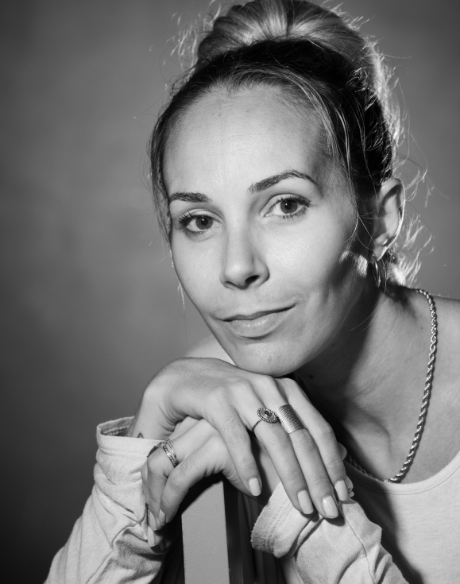

<!DOCTYPE html>
<html lang="fr">

<head>
    <meta charset="UTF-8">
    <meta name="description" content="Biographie d'Aurélie Lhuillier Photographe professionnel basée à cuers">
    <meta name="keywords" content="photo, photographe, shoot, shooting, aurélie, lhuiller, séance photo">
    <meta name="author" content="Aurélie Lhuiller">
    <meta http-equiv="X-UA-Compatible" content="IE=edge">
    <meta name="viewport" content="width=device-width, initial-scale=1.0, maximum-scale=1.0, user-scalable=no" />
    <title>Lili Photo - Biographie/title>
    <link rel="icon" href="../assets/svg/camera.svg" type="image/svg">
    <link rel="stylesheet" href="../css/style.css">
    <link rel="stylesheet" href="../css/mon-histoire.css">
    <link href="https://unpkg.com/aos@2.3.1/dist/aos.css" rel="stylesheet">
</head>

<body>

    <header>
        <button onclick="topFunction()" id="scroll-back">↑</button>
    </header>

    <main>
        <div class="container">
            <div class="col">

                <h2>Mon histoire</h2>

                <div class="row">

                    <div class="right-side col">
                        

                        <p>
                            
                            Bonjour, je m’appelle aurélie, je suis originaire de LYON, là- bas j’y ai suivi des études
                            d’intermittente
                            du spectacle, j’ai appris le maquillage cinéma, théâtre, mode, beauté ainsi que toutes les
                            coiffures de
                            1800 à nos jours, j’ai appris les effets spéciaux et la fabrication de perruques.
                            Arrivée dans le var, j’ai travaillé dans le médical tout en continuant mon métier de
                            maquilleuse,
                            coiffeuse pour les mariages et occasionnellement à l’opéra de Toulon.
                            Passionnée de photographie, j’ai décidé de ma lancer en tant que professionnelle. J’ai donc
                            suivi une
                            formation à l’école FORMA PHOTO PACA au Lavandou.
                            C’était mon rêve de devenir photographe et de pouvoir vivre de ma passion. J’aime l’histoire
                            qui se
                            cache derrière les photos et rappelle immédiatement l’esprit de ce moment figé.
                            Les photos de familles, bébés, mariages, paysages, animaux, sont des instants de bonheur qui
                            se
                            partagent et pour lesquels je souhaite laisser une trace pour les générations à venir.
                            La photo est une technologie incroyable, cette boîte magique qui saisit tant d’émotions,
                            c’est la
                            magie que je souhaite faire ressortir dans mon travail, mon travail de prise de vue, de
                            retouche et de
                            création.
                            Je peux vous aider à aller jusqu’au bout de vos projets en cumulant mes deux métiers, je
                            vous aide à
                            réaliser vos envies.
                            Je suis à l’écoute de tous vos projets…
                        </p>
                        <a href="./" class="button">← Retour</a>

                    </div>

                </div>
            </div>
        </div>
    </main>

    <script defer type="text/javascript" src="../script.js"></script>
    <script src="https://unpkg.com/aos@2.3.1/dist/aos.js"></script>
    <script>
        AOS.init({
            offset: 100,
            delay: 200,
            duration: 1000,
            disable: function () {
                var maxWidth = 1920;
                return window.innerWidth < maxWidth;
            }
        });

    </script>
</body>

</html>